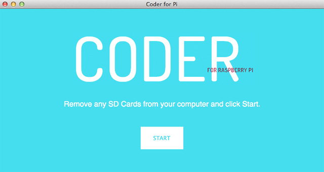
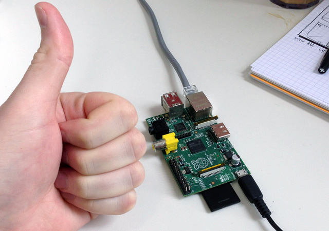
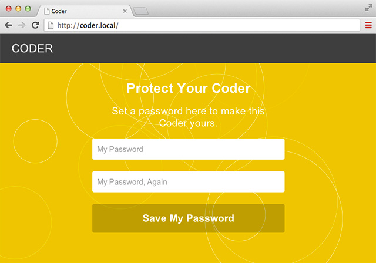
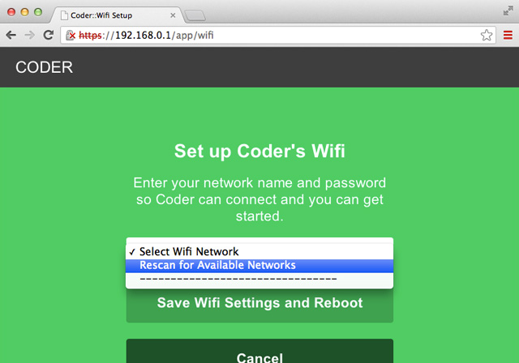
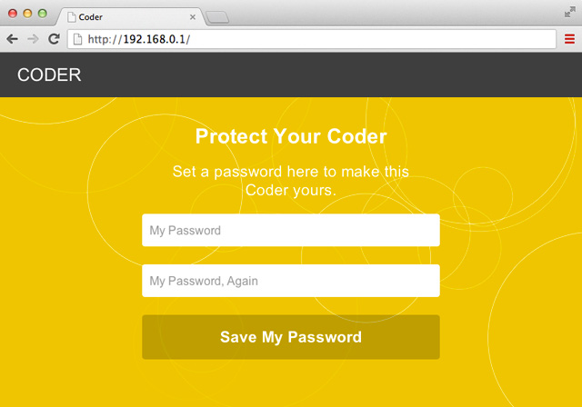
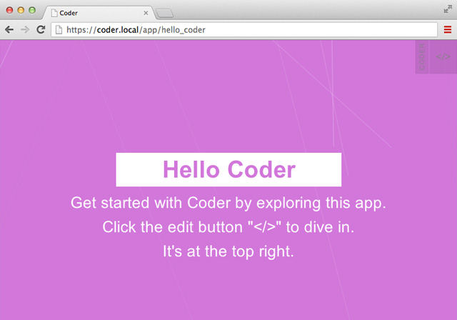

Step 1: Download the Coder SD image
If you already have a Coder-formatted SD card, skip on ahead to step 3. Otherwise, you can download the latest version from the Coder website. It's a large, 1GB zip file, so be prepared to wait for a bit.
Step 2: Format your SD card with the Coder image

Now that you've downloaded the Coder SD image, we need to transfer that to the SD card you'll be using with Coder. This process will reformat your SD card and transform it into a valid Raspberry Pi boot disk.
Pay close attention here, because the intructions are slightly different depending on what type of computer you have.
If you have a Mac:
- You should have downloaded a zip file named something like coder_v0.4zip. Find it in your downloads folder.
- Double-click that to unzip your download. It will create a folder called coder_v0.4. Inside are two files: raspi.img and CoderSetup.app.
- Double-click the CoderSetup.app file. If you get a security error, option-click (or right click) and select Open, then click through the warning to allow the app to run.
- Follow the instructions carefully. You will start by removing all SD cards from your computer, then you'll insert your Coder SD card for formatting. This process can take a minute or two. Note that you will be asked to enter your password in order to format the SD card.
- When you're all done, remove your new Coder SD card!
If you have a Windows PC:
- You should have downloaded a zip file named something like coder_v0.4zip. Find it in your downloads folder.
- Double-click that to unzip your download. It will create a folder called coder_v0.4. Inside are two files: raspi.img and CoderSetup.app.
- Download Win32DiskImager. Unzip this file and find the Win32DiskImager utility inside.
- Insert the SD card into your SD card reader.
- Run Win32DiskImager. Note: you may need to run the utility as Administrator. Right-click on the file, and select 'Run as Administrator'.
- Select the raspi.img file from your Coder download.
- Select the drive letter of the SD card in the device box. Be careful to select the correct drive; if you get the wrong one you can destroy your data on the computer's hard disk!
- Click Write, wait for the write to complete, and then eject your new Coder SD card.
- To connect to Coder using a Windows PC, you'll also need to install Apple's Bonjour Print Services for Windows. This will allow your web browser to see your Coder device at the http://coder.local/ url. Do this before you go any further.
Get Bonjour for Windows
Step 3: Plug it all in

Let's put all the components together and boot your new Coder device for the first time.
First things first, you need to decide if you are connecting over WiFi or a wired Ethernet connection. Ethernet is much easier and more reliable—if you have it, use it. Wireless also works, but can take a little extra time to configure. If you have trouble, start by configuring things for a wired connection first, and use that connection to set up your device for WiFi.
- Insert the SD card into the SD slot underneath your Raspberry Pi. It only goes in one way, so if it doesn't fit, try turning it upside down. Don't force it.
- Using Ethernet: Plug in your Ethernet cable and connect your Raspberry Pi to your router or access point.
- Using WiFi: Do not plug in your Ethernet cable. Plug your WiFi adapter into the USB slot on your Raspberry Pi.
- Finally, plug in the power adapter and connect its USB adapter to your Raspberry Pi. This isn't a real USB connector—it's just for power. You'll see the lights on your Pi blink while it boots up.
Step 4: Connect using Ethernet

Your Coder is booting up. Give it a minute, and you should be able to connect to it from your computer's web browser.
Note: if youre using WiFi, you may want to connect this way first to configure your device.
- Be patient. Give your new device a minute or so to boot up.
- Open your web browser on your Mac or PC.
- Type in http://coder.local/ into the navigation bar.
- You'll see a security warning, because your Coder device uses a self-signed security certificate. Click to proceed past this to the login screen.
- Set a good password, then log in.
Step 5: Connect using WiFi

Skip this step if you're using Ethernet.
The first time you boot Coder using a wireless card, it will create an Ad-hoc device network called CoderConfig. You can connect to this network before your Pi has been configured and use it to set up your device.
- Be patient. Give your new device a minute or so to boot up.
- Wait for the CoderConfig ad-hoc (device) network to appear. Connect to that with your computer.
- On this config network, your Pi will connect to IP address 192.168.0.1.
- Open your web browser on your Mac or PC.
- Type in http://192.168.0.1/ into the navigation bar.
- You'll see a security warning, because your Coder device uses a self-signed security certificate. Click to proceed past this to the login screen.
Once you've connected you'll see this screen

- Set your password, and then log in.
Step 6: Configure your Wifi

Skip this step if you're using Ethernet.
Let's set Coder up to connect to your normal WiFi network. Then you'll be able to see your Coder device as well as the normal internet.
- After logging in on the config network, you'll arrive at the Coder home screen.
- Click the gear icon at the top right to open the settings panel.
- Click on the Wifi Setup button. This will take you to the WiFi configuration tool built into Coder.
- Select your network from the list. If you don't see your network, select "Rescan for Available Networks". You may need to try this a couple times before your network is discovered.
- Select your network and carefully type your network's password. Type carefully—if you type this incorrectly, your device will be unable to connect to the network when it restarts.
When you've completed this, your Coder device will automatically restart and connect to your normal access point. You'll need to connect back to your normal access point to continue.
- Switch the wireless connection on your PC or Mac back to your normal access point. This should be the same network you configured your Coder to connect to.
- Coder will take a minute to reboot. Be patient.
- Type in http://coder.local/ into the navigation bar to reconnect to your device.
- You'll see a security warning, because your Coder device uses a self-signed security certificate. Click to proceed past this to the login screen.
- Log in with the password you set earlier.
Step 7: Explore

Congratulations! Your new Coder is all set up and ready for making cool web things.
Take a moment to click around and explore. The Hello Coder app is a good place to start—it will show you how a basic Coder project is constructed. If you're ready for a break, try clicking on the app called "Space Rocks!" and play a quick game of interstellar survival and defense.